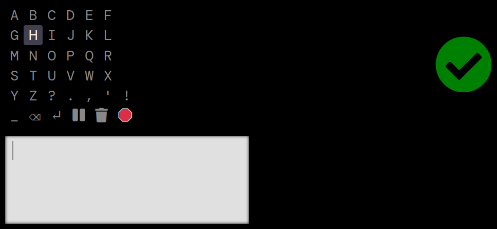
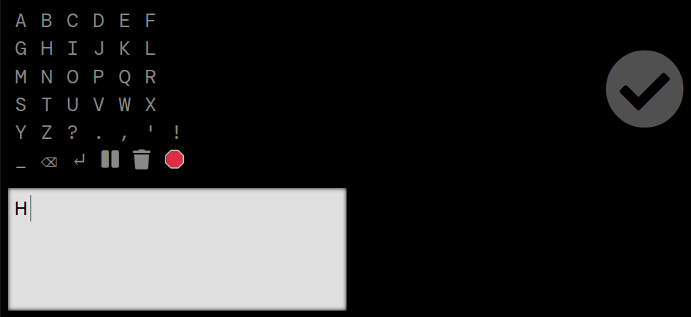
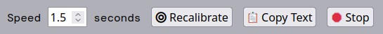

eye type — type with your webcam
We were unable to detect a camera on this device. If you would like to use the eye-typewriter please connect a webcam and reload the page.
Instructions
The webcam needs to watch your eyes. So the device needs to be fixed in place, and it will also help if you can stay still.
Calibrating
The eye tracker automatically begins calibrating when it finishes loading. A red dot appears and moves across the screen. All you have to do is watch it.
If you have double vision you can wear a patch over one eye. If your head tilts to one side you may also find patching one eye helps this tracker. Experiment and see what works best for you.
The typewriter
Next the typewriter appears. You will spend most of your time looking at the left side of the screen where the typing occurs. The character grid at the top left is where you choose the characters you want to type. When you choose a character it appears in the message box.

Let's type the word HI.
The character grid automatically highlights one row at a time. When the row with the H is highlighted we look to the right side of the screen. There is a checkmark that indicates you have chosen the highlighted item. It should turn green when you look at it.

After a row has been chosen each of its characters gets highlighted one at a time. We wait for the H to get highlighted and then look to the right again to choose it.
When we look back to the left we see our letter has appeared in the message box and the cursor has moved one place to the right.
Continue
That's all there is to it! Repeat the process to type your message.
The last row contains controls for space, backspace, line return, pause, "delete all" and "stop typing".
When you miss the row or character you want, just wait and the highlight rotation will go back to the beginning.
Settings
At the bottom of the screen there are some setting controls which are activated by clicking.
- You can adjust the highlight rotation speed.
- You can recalibrate the eye tracker. e.g. If the user needs to move you may need to recalibrate after.
- You can copy the user's text to clipboard so that it can be pasted into an email, card, etc.
- You can stop or restart typing.
If you are helping someone else use the site please keep in mind that the muscles turning the eye eventually tire of moving in these patterns and it may be a good idea to give the typist a break after a while.
Enjoy :)
Privacy
The eye tracking video feed does not leave your computer.